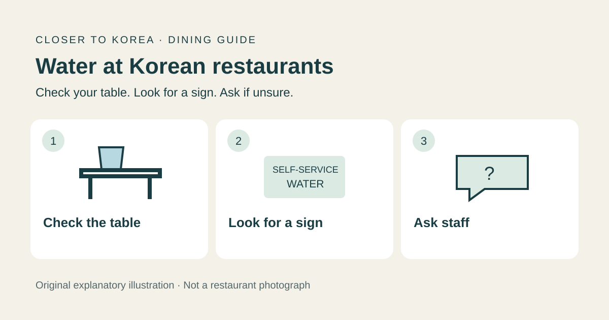
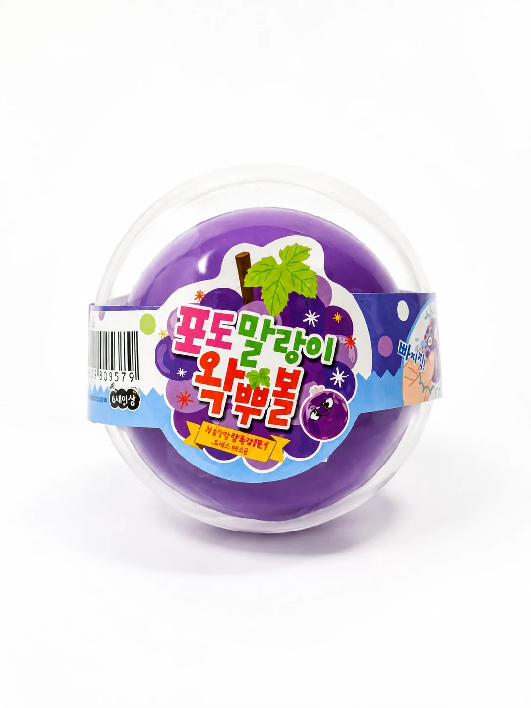
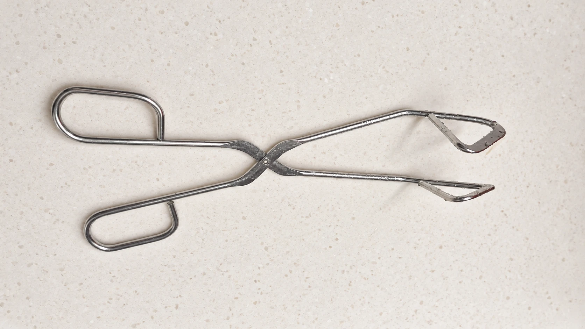
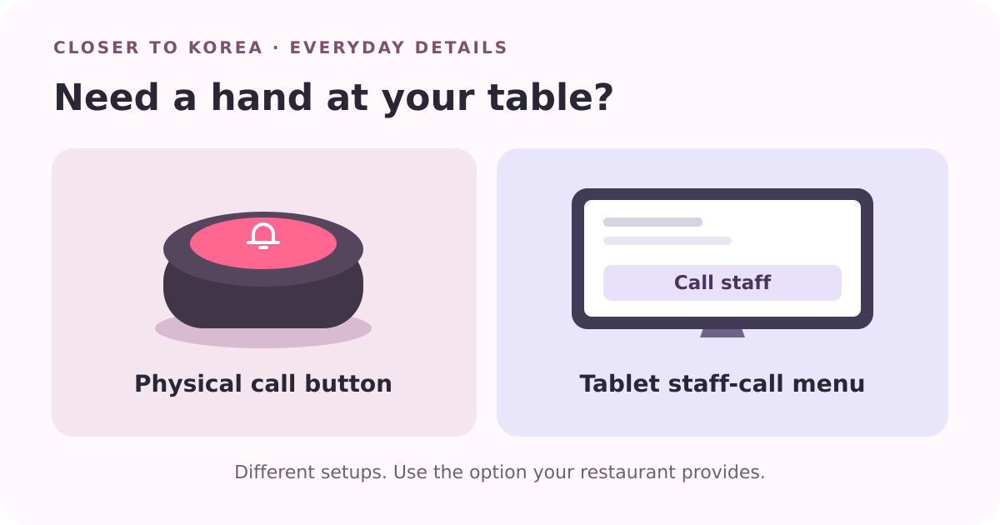
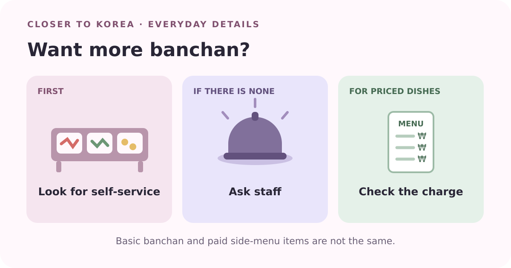
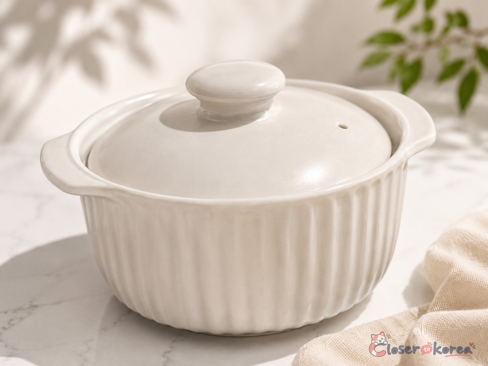
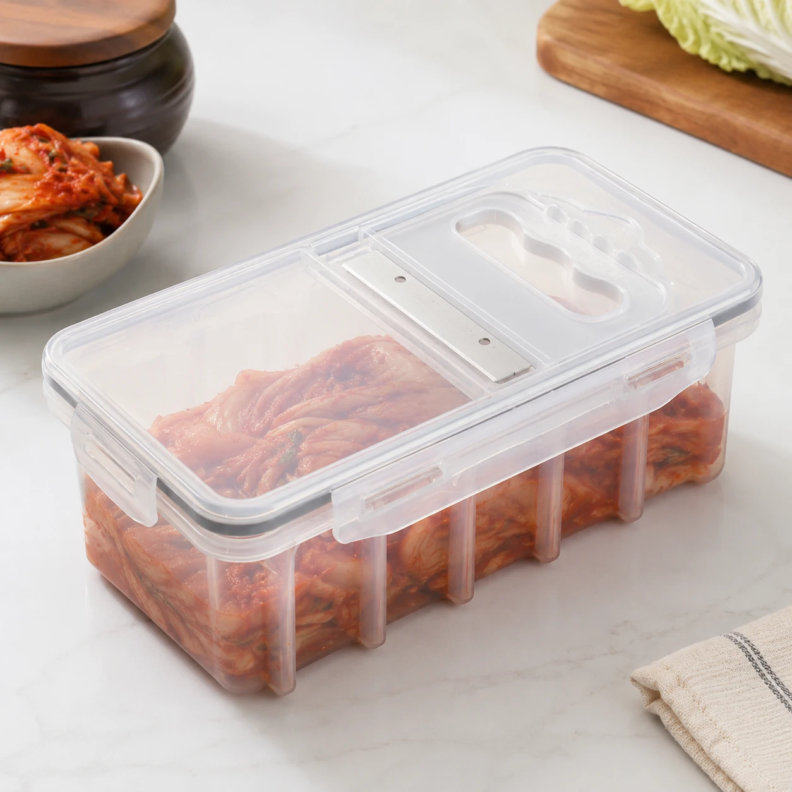

What Is a Korean Microwave Steamed Egg Cooker?
Learn what a Korean microwave steamed egg cooker is, how it is used for gyeran-jjim, and how it differs from a traditional Korean ttukbaegi.
Published Jul 30, 2026Real products. Real context. Clear matches.
Discover Korean products, routines, and everyday finds—with clear context on what they are and how they fit into life in Korea.
Browse Product Guides →
Explore by curiosity
Choose a path through everyday routines, kitchen culture, current finds, and things seen online.
A closer look this week
One story to begin with, plus two recent discoveries—selected for useful context, not product hype.
Learn what a Korean microwave steamed egg cooker is, how it is used for gyeran-jjim, and how it differs from a traditional Korean ttukbaegi.
Published Jul 30, 2026
Water may arrive with staff, be waiting on your table, or be self-service. Here is what to look for and how to ask.
Published Oct 17, 2026
A grape-themed wakppubol purchased and photographed in Korea, with a wax outer shell that is cracked for its sound and tactile feel.
Everyday Korea, explained
Understand the habits, objects, and small details of Korean life—with the local context a short video or shopping page may leave out.

After seeing Lee Guk-joo use scissor-style tongs on a Korean show, I bought a pair and tried them while pan-frying mandu.
Published Oct 16, 2026
A small button on the table or a staff-call menu on the ordering tablet can help you ask for assistance. Here is how to recognize the two setups and what to do next.
Published Oct 16, 2026
Start by looking for a self-service station. If you cannot find one, ask a staff member, and remember that separately priced side dishes are a different matter.
Published Oct 16, 2026Identify what you saw
See what the item is, how it fits into life in Korea, and whether the match is confirmed, likely, or a similar alternative.

A ceramic microwave cooker purchased at Daiso Korea and personally used to prepare small portions of gyeran-jjim.

A Korean kitchen product concept that combines a kimchi-cutting function with storage in one container.
Current signal
Current finds appear here only when there is enough context to explain what is verified—and what is not.
A grape-themed wakppubol purchased and photographed in Korea, with a wax outer shell that is cracked for its sound and tactile feel.
Find it without knowing the name
Describe what it looked like, what it was used for, where you saw it—or type the Korean word the way it sounded to you.
English description, Korean name, romanization, and reasonable sound-alike spellings can all work.
Why Closer to Korea
Based in Korea, careful about match labels, and clear about what is still unverified.
Local observations and direct photos when available.
Exact, likely, and similar products stay separate.
Every discovery does not become a purchase recommendation.